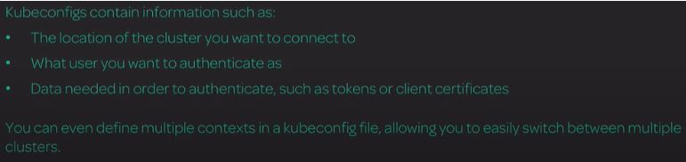
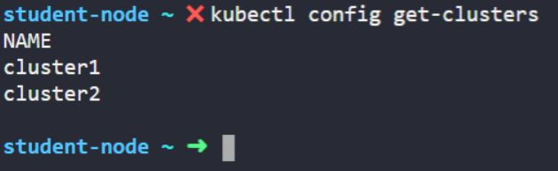

It is a Kubernetes configuration file, or kubeconfig, that stores "information about the clusters, users, namespaces, and authentication mechanisms."
It contains the configuration data needed to connect to and interact with one or more Kubernetes clusters.
How will a kubelet service on one of our worker nodes know how to locate the Kubernetes API and authenticate with it? It will use kubeconfig.
To get the number of clusters in Kubernetes:
